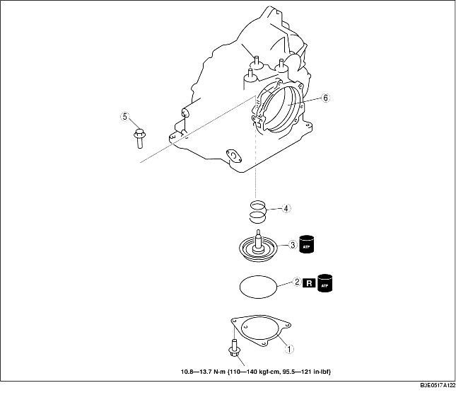

1. Disassemble in the order indicated in the table.
2. Assemble in the reverse order of disassembly.

1. Measure the spring free length.
Specification
|
Outer diameter mm {in}
|
Free length mm {in}
|
No. of coils
|
Wire diameter
mm {in}
|
|---|---|---|---|
|
34.0 {1.340}
|
36.4 {1.430}
|
2.5
|
4.0 {0.160}
|
2. Install the servo return spring to the transaxle case.
3. Install the servo piston to the transaxle case.
4. Apply ATF to new O-ring and install it to the transaxle case.
5. Install the servo retainer by tightening the bolts evenly and gradually.